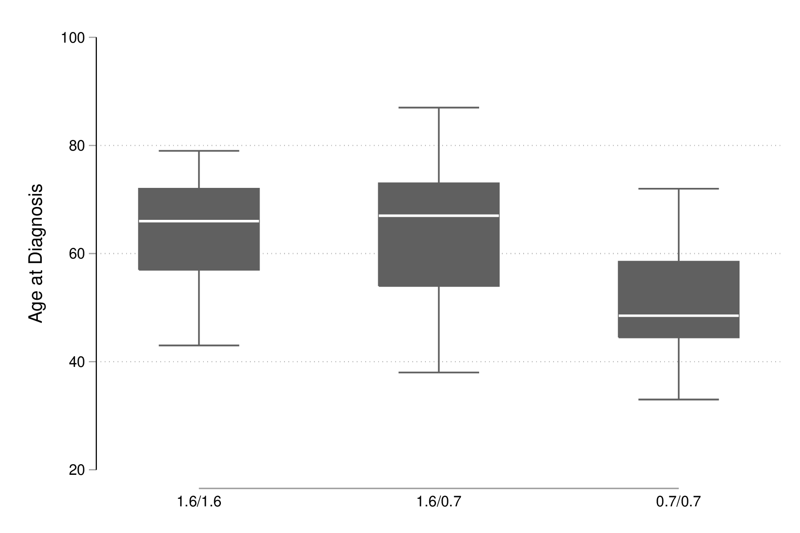

Stata : analyse de la variance
Table des matières
L’analyse de variance (ANOVA), souvent retrouvée dans l’exploitation d’un plan d’expérience, peut être dérivée dans la plupart des cas à partir des modèles de régression vus au chapitre 3 (et plus tard, aux chapitres 9 et 10). Toutefois, une présentation de la décomposition des sources de variance et du calcul des sommes de carré associées, indépendante de l’approche de régression linéaire, est proposée dans ce chapitre, d’autant que Stata dispose de commandes spécifiques pour les modèles d’ANOVA, en particulier oneway et anova.
Analyse de variance à un facteur
Dans l’exemple suivant, tiré de [1], on s’intéresse à la relation entre l’âge des participants à l’étude au moment du diagostique et un polymorphisme de séquence. Les données sont disponibles dans le fichier polymorphism.dta :
use data/polymorphism list in 1/5
set more off
use data/polymorphism
list in 1/5
+---------------------+
| id age genotype |
|---------------------|
1. | 1 43 1.6/1.6 |
2. | 2 47 1.6/1.6 |
3. | 3 55 1.6/1.6 |
4. | 4 57 1.6/1.6 |
5. | 5 61 1.6/1.6 |
+---------------------+
Un résumé descriptif des données de groupe (ici défini par le type de polymorphisme) peut être obtenu très rapidement à l’aide de tabstat :
tabstat age, by(genotype) stat(mean sd n)
tabstat age, by(genotype) stat(mean sd n)
Summary for variables: age
by categories of: genotype (Genotype)
genotype | mean sd N
---------+------------------------------
1.6/1.6 | 64.64286 11.18108 14
1.6/0.7 | 64.37931 13.25954 29
0.7/0.7 | 50.375 10.63877 16
---------+------------------------------
Total | 60.64407 13.49427 59
----------------------------------------
Un résumé graphique de la distribution conditionnelle de l’âge dans les trois groupes s’obtient tout aussi simplement à l’aide de graph box :
set scheme plotplain graph box age, over(genotype) graph export "fig-04-boxplot-age-genotype.eps", replace

Figure 1 : Distribution de l’âge de diagnostic en fonction du polymorphisme